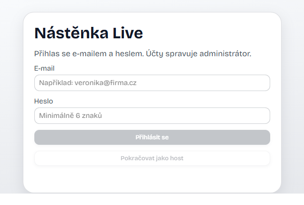
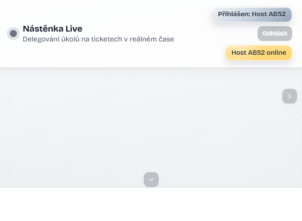
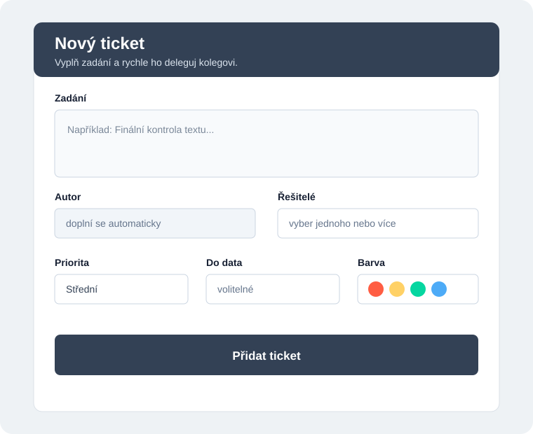
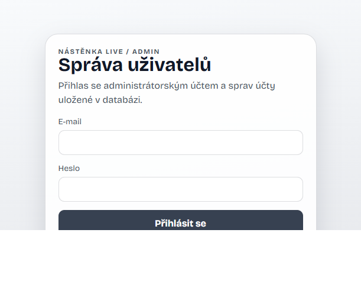

Přístup a oprávnění
Přihlášení
- Otevřete adresu Nástěnky Live.
- Zadejte e-mail a heslo.
- Pro pouhý náhled zvolte Pokračovat jako host.
Po přihlášení se v horní liště zobrazí vaše jméno a seznam online uživatelů.

Host a role
Host může prohlížet plochu, tickety, živý feed a online uživatele. Nemůže vytvářet, upravovat, přesouvat, řešit ani mazat tickety, spravovat spojnice, pracovat se snapshoty ani měnit heslo.
Autor obvykle upravuje a maže své aktivní tickety. Administrátor má rozšířená oprávnění včetně správy uživatelů a historie.
Rozhraní
Levá svislá lišta obsahuje nástroje. Kliknutím nástroj otevřete, dalším kliknutím jeho panel zavřete.
| Nástroj | Účel |
|---|---|
| Nový ticket | Vytvoření a delegování ticketu. |
| Filtrace | Zobrazení ticketů podle řešitele. |
| Spojnice | Propojení dvou ticketů čárou. |
| Zálohy | Uložení nebo obnova snapshotu plochy. |
| Můj účet | Změna vlastního hesla. |
| ? | Otevření tohoto manuálu. |
Vpravo najdete živý feed a přehled online uživatelů. Plocha se pohybuje jako pracovní plátno.

Ticket
Vytvoření
Ticket může vytvořit přihlášený uživatel s oprávněním k úpravám. Host režim slouží pouze k prohlížení.
- V levé liště klikněte na Nový ticket. Alternativně klikněte na volné místo plochy a v nabídce Co chceš přidat? zvolte ticket.
- Do pole Zadání napište popis úkolu. Text můžete formátovat tučně, kurzívou, velikostí, zarovnáním nebo doplnit smajlíkem.
- V poli Autor zkontrolujte automaticky doplněné jméno.
- V poli Řešitelé vyberte jednoho nebo více uživatelů. Více položek vyberete pomocí klávesy Ctrl nebo Shift.
- Nastavte Prioritu: nízkou, střední nebo vysokou.
- Volitelně vyplňte Do data.
- Vyberte Barvu, která ticket odliší na ploše.
- Klikněte na Přidat ticket. Ticket se objeví na ploše a změna se rozešle ostatním připojeným uživatelům.

Editor podporuje tučné písmo, kurzívu, tři velikosti textu, zarovnání, smajlíky a vložení textu ze schránky. Pokud potřebujete vytvořit pouze text bez ticketu, použijte rychlou volbu Čistý text.
Úpravy a vyřešení
Kliknutím ticket otevřete. Přetažením ho přesunete po ploše; úchyt na jeho okraji použijete ke změně velikosti. Podle oprávnění můžete změnit zadání, formátování, řešitele, prioritu, termín a barvu. Uložení změny se automaticky synchronizuje.
Kliknutím na Vyřešeno ticket přesunete do archivu. Pokud je archiv mimo výřez, zobrazí se vlevo dole směrová informace. Vyřešený ticket lze obnovit nebo odstranit.
Filtrace a hromadné akce
V panelu Filtrace vyberte řešitele. Plocha zobrazí tickety přiřazené danému uživateli.
Pro hromadnou akci vyberte více ticketů přímo na ploše. Podle oprávnění je můžete označit jako vyřešené, upravit nebo smazat. Trvalé smazání vyžaduje potvrzení.
Spojnice
- Klikněte na Spojnice.
- Klikněte na první ticket.
- Klikněte na druhý ticket.
Konce spojnice se automaticky přepočítávají při přesunu nebo změně velikosti ticketu. Existující spojnici vyberete kliknutím. Poté můžete použít Upravit spojnici nebo po potvrzení Smazat spojnici.
Živý feed
Živý feed zobrazuje vytvoření, přesunutí, úpravu, vyřešení a smazání ticketu. Časy se zobrazují v časovém pásmu Europe/Prague.
Po každém spuštění serveru začíná nový běh feedu. Starší události zůstávají uložené a administrátor je může vyhledávat a exportovat.
Zprávy uživatelům
Klikněte na jméno připojeného uživatele v přehledu v horní části obrazovky. Otevře se samostatné modální okno, do kterého napište zprávu a odešlete ji tlačítkem Odeslat. Zpráva se zobrazí pouze vybranému příjemci jako dočasné upozornění v pravé horní části pracovní plochy. Host zprávy posílat nemůže.
Snapshoty
- Uložit snapshot nyní uloží aktuální stav plochy.
- Obnovit poslední snapshot načte nejnovější uložený stav.
Server ukládá změněnou plochu automaticky jednou za pět minut a uchovává tři nejnovější snapshoty. Snapshot obsahuje tickety, textové prvky, spojnice, pozice, rozměry, formátování a metadata.
Účet a heslo
Otevřete Můj účet kliknutím na ikonu účtu v levé liště.
- Zadejte aktuální heslo.
- Zadejte a zopakujte nové heslo.
- Klikněte na Změnit heslo.
Heslo musí mít alespoň 6 znaků a musí se lišit od původního. Po změně zůstává přihlášení aktivní. Odhlásíte se tlačítkem Odhlásit v levé liště pod ikonou Můj účet.
Administrace
Administrace je samostatná stránka na adrese /admin.html. Administrátor otevře Můj účet kliknutím na své jméno nebo ikonou účtu v levé liště; uvnitř panelu se zobrazí odkaz Správa uživatelů. Odkaz není samostatným tlačítkem v levé liště. Administrátor se přihlásí svým e-mailem a heslem.

Administrátor může vytvářet, upravovat a mazat účty, měnit údaje a role, nastavovat hesla, vyhledávat historii, mazat aktivitu a exportovat feed i snapshoty ve formátu JSON nebo CSV.
Při úpravě účtu není nutné vyplňovat heslo, pokud ho nechcete změnit.
Kompletní reset nástěnky
V dolní části administrace je nevratná operace Kompletní reset nástěnky. Po zadání aktuálního hesla a přesného potvrzení RESET odstraní všechny tickety, texty, spojnice, snapshoty a záznamy aktivity. Uživatelské účty zůstanou zachované.
Řešení potíží
Změny se nezobrazují
Obnovte stránku a zkontrolujte účet. Synchronizace probíhá pouze při aktivním připojení k serveru.
Nevidím nástroje pro úpravy
Pravděpodobně jste přihlášeni jako host nebo váš účet nemá oprávnění měnit obsah.
Nemohu obnovit snapshot
Ověřte oprávnění a také to, zda byl snapshot skutečně uložen.